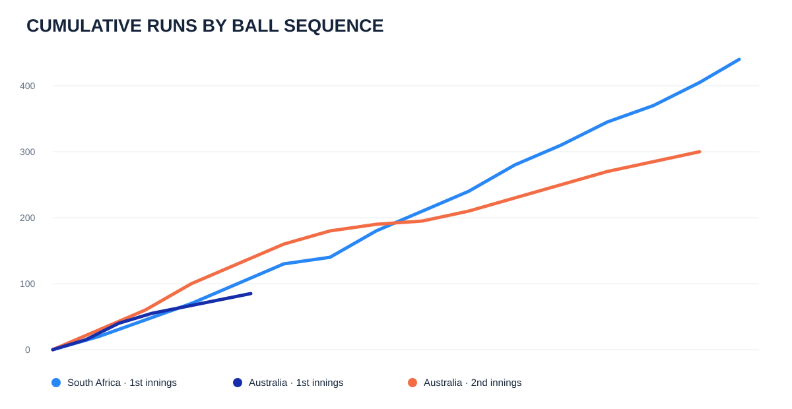
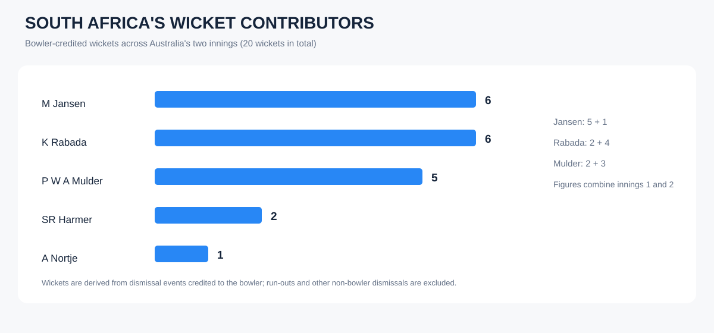

Page 01 — Match overview
KPI cards, innings comparison, dot-ball percentage by over range and boundary counts.

A ball-by-ball post-match analysis of South Africa vs Australia at St George’s Park. This Power BI project explores innings performance, scoring patterns, boundaries, dot-ball pressure and player-level outcomes.
Headline figures from the completed three-page Power BI report, aggregated across the innings represented in the supplied dataset.
These dashboard previews document the completed report. The screenshots are included in the repository and can be opened individually.
KPI cards, innings comparison, dot-ball percentage by over range and boundary counts.
Cumulative runs across the three innings, plotted by ball sequence.

Player run and boundary summaries alongside the wicket-by-bowler comparison.

The report moves from match-level summary into delivery-level patterns and player comparisons.
Contrast South Africa’s 425/9 declaration with Australia’s two innings of 99 and 295 runs.
Track cumulative runs ball by ball to examine scoring momentum across innings.
Compare dot-ball percentages in 20-over bands and separate fours from sixes.
A structured workflow from nested match data to an interactive analytical report.
The original source was a nested Cricsheet YAML file, transformed into a flat ball-by-ball table before analysis. The Power BI report contains three pages: Match Overview, Batting Analysis and Bowling Analysis. The editable .pbix and original ball-by-ball data are not included in this public portfolio repository.
*Match dates and statistics are reproduced from the supplied project dataset. The displayed dismissal count is not necessarily identical to bowler-credited wickets.